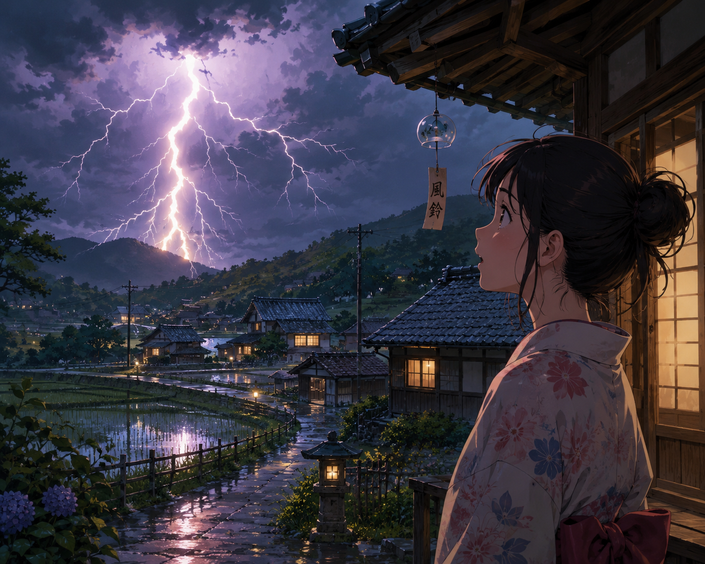

しーん...
Hearts beat in the space between …
ピカッ！
Suddenly the idea strikes me - like a thunder bolt or like falling in love …
One moment passes and I arrive in the experience …
I did not ask for this ! Nor did I ! - you shout out loud, in a pointed reply …
I do love to see your face full of happy surprises, with the cute, sweet breathlessness: "Uwa", chirps …
Fills me with Bliss …
Then the idea arrives like a flash …
ピカッ！
Is inspiration or desperation ?
I only want to reach you … not teach you … just feel you
In this loving moment, I want to whisper in your ear, softly, calmly, seductively: "As Your mind ponders,
all the cells in your head move at the speed of light … "
Your thoughts travel at the speed of light … throughout your nervous system … like everyone else's …
You say I am clever and I say: "No, I just work hard: using focus, purpose and love in this moment …".
I say am stupid and you silently agreed with your inaction, and I suddenly felt like an old fool …
I do so Love to see, hear your happy surprises and with your laughter …
Brings Joy to my heart and soul …
Every time - All the time …
When I said: "I Love you", your face dropped and my spirit fades:
I feel my life force drain away as the word strikes fear in your mind … and I fret … Why?
Me ?
Or your past?
When you pull that switch ? From hot to cold, do You know why?
Did you decide to punish me for loving you ?
Now I think I want to Cry …